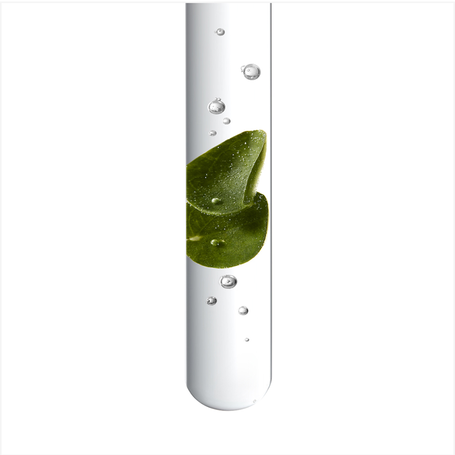

Chroma Absolu
Restoring Acid Care For All Color-Treated Hair

#youdarewecare
Bathe
Treat
Prime
Fusio dose
Exclusive for salons

Bathe
Bain Chroma Respect
Free of Silicone, Sulfates and Paraben
Color Protecting
&
Hydrating Shampoo
HAIR TARGET
For sensitized or damaged color-treated, thin to medium hair
PRO TIPS
Can be used as a post coloration shampoo
Bain Riche Chroma Respect
Free of Silicone, Sulfates and Paraben
Color Protecting
&Nourishing
Shampoo
HAIR TARGET
For sensitized or damaged color-treated hair, medium to thick hair
PRO TIPS
Can be used as a post coloration shampoo
Treat
Fondant Cica Chroma
Recovery anti-porosity conditioner system
HAIR TARGET
For sensitized or damaged color-treated hair, fine to medium

Masque Chroma Filler
Anti-porosity, deep filling masque system
HAIR TARGET
For sensitized or damaged color-treated hair, medium to thick
Masque Vert Neutralisant
Dark brunette perfecting anti-red undertones masque
HAIR TARGET
For sensitized or damaged color-treated hair with unwanted red undertones
PRO TIPS
Can be used as the backbar to neutralize too warm undertones
HOW TO RECOMMEND
Made to maintain their desired tone and avoid appearance of red tones basis
Soin Acide Chroma Gloss
Resurfacing high shine rinse treatment
HOW TO APPLY
Apply to shampooed and towel-dried mid-lengths and ends until saturated. Massage the hair until product transforms into a milky texture, then rinse thoroughly
HOW MUCH
1 dose = fine/medium hair
2 doses = thick/long hair
1 dose = 15 mL = 1 line
1 bottle = 210 mL = 3,5 month
with 1 use per week
HOW TO RECOMMEND
On a weekly basis, either to replace the Fondant or the Masque, or for extra care and shine after the Masque
Prime
Sérum Chroma Thermique
Anti-frizz antioxidant thermic serum
HAIR TARGET
All types of colored and damaged hair
HOW TO APPLY
Spray the product section by section throughout lenghts of towel-dried, damp hair. Proceed to blow dry and airdry.
What’s inside
Powered by the science of 3 ultra-caring acids:


With Centella Asiatica
Millenary plant
Known for its regenerative and healing properties.
Indulgent sensoriality

Nerolist perfume
72h Intense Fragrance Halo*
A unique new luxurious scent
*Instrumental test: Bain Riche Chroma Respect + Masque Chroma Filler + Sérum Chroma Thermique
In-salon routine
On the day of the coloration
To neutralise warm brown undertones
Fusio dose
Instant recovery treatment for color treated hair
The high acid concentrate formula boosts the pro-adherence of the caring/nourishing agents of the Concentré, making this duo a powerful treatment to recover hair from color induced damages.PRO TIPS
For more personalisation, adapt the booster according to the client’s whishes shared during the diagnosis.
Color damage
How does hair color sensitize my hair?

The 3 levels of color damages
Damages at the core
Augmente porosity weakens fiber, letting moisture and color escape.
* Instrumental test on Soin Acide Chroma Gloss + Sérum Chroma Thermique
Damages at the middle
Environmental aggressors like UV damage, heating tools and hard water, accelerate color oxidation and limit shine potential.
* Instrumental test after Bain Chroma Respect
Damages at the surface
Cuticle is rough and dry, triggering color induced frizz.
* Instrumental test after application of
Chroma Absolu
range.
How to recommend
The right range according to your client’s hair needs?
Chroma Absolu
For all types of color-treated hair.

Blond Absolu
For all types of bleached blond hair. From highlight to extreme bleach.
Resistance
For all types of damaged hair. For multi chemical processed hair.
Sustainability
Packaging

Our shampoo bottles* are now
made with 95% recycled
plastic**
and are recyclable
* Excluding the cap
** The remaining 5% are dyes and additives
Factory

Since 2015 our factories achieved
carbon neutrality using
100%
renewable energy
100% of the water used for production processes is recycled and reused.
In 2020, our factory saved 32 million liters of water.
Drive to Access
Become a Chroma expert Want to learn more?
E-learning, Tutorials, Professionals testimonials, Recap sheets...
Follow us on Instagram to get the most expert content and inspiration